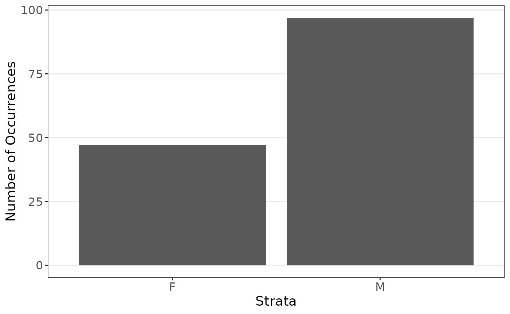
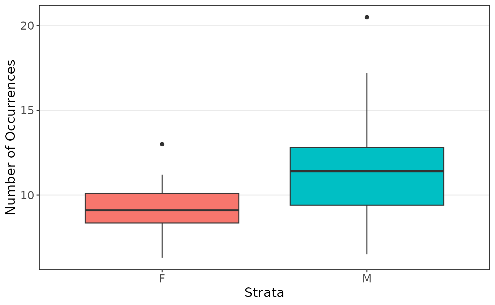
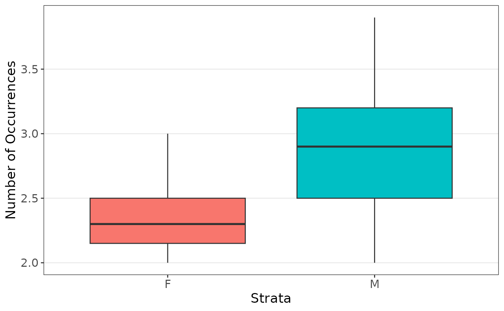
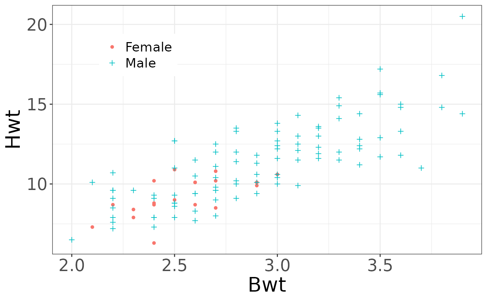
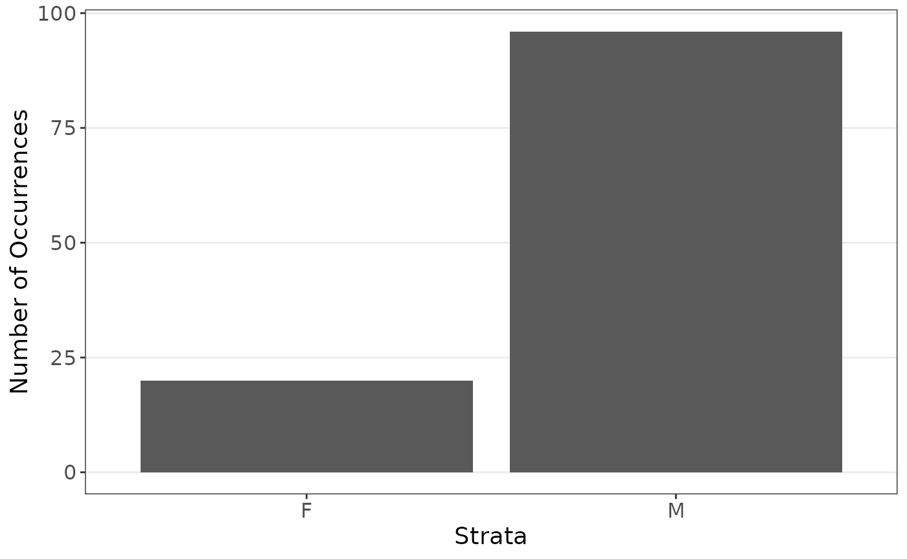

Overview
This vignette examines the cats data set. The goal of this analysis is to see the effect sex has on the body and heart weight measures.
Full Data
We first are interested in the coefficients when estimating the body weight using sex and heart weight, stratified on sex since there are far less female cats observed.
plot_strata_bar(cats$Sex)
plot_strata_box(cats[, c("Sex", "Hwt")])
plot_strata_box(cats[, c("Sex", "Bwt")])
ggplot() +
geom_point(aes(x = Bwt, y = Hwt, col = Sex, shape = Sex), data = subcats) +
theme_bw() +
theme(
axis.title = element_text(size = 22),
axis.text = element_text(size = 18),
legend.position = c(.2, .8),
legend.title = element_blank(),
legend.text = element_text(size = 14)
) +
scale_color_discrete(labels = c("Female", "Male")) +
scale_shape_manual(
labels = c("Female", "Male"),
values = c(16, 3)
)
#> Warning: A numeric `legend.position` argument in `theme()` was deprecated in ggplot2
#> 3.5.0.
#> ℹ Please use the `legend.position.inside` argument of `theme()` instead.
#> This warning is displayed once every 8 hours.
#> Call `lifecycle::last_lifecycle_warnings()` to see where this warning was
#> generated.
Now modeling the data:
set.seed(1234)
summ_function(cats)
#> Estimate Std. Error t value Pr(>|t|)
#> (Intercept) -0.41495263 0.7273243 -0.5705194 5.692336e-01
#> SexM -0.08209684 0.3040474 -0.2700133 7.875448e-01
#> Bwt 4.07576892 0.2947885 13.8260785 5.119676e-28
# Perform resampling
results <- resample(
data = cats, fn = summ_function, M = 1000,
strata = "Sex", sizes = mean
)
summarize_resample(results)
#> estimates sd lower upper
#> (Intercept) 0.3228890 0.8390425 -1.777822e+00 1.861777
#> SexM 0.2203873 0.5553191 -1.160691e+00 1.298926
#> Bwt 4.2441493 5.2268665 1.983298e-30 14.773262In both methods, the sex was insignificant and body weight was important.
Subset Data
We are now interested in the coefficients when estimating the body weight using sex and heart weight, stratified on sex since there are far less female cats observed, with a smaller data set. In practice it is hard to know the exact effect of data sizes, so it is worth examining what may happen. We subset the data such that sex will now be more important
plot_strata_bar(subcats$Sex)
Now modeling the data:
set.seed(1234)
summ_function(subcats)
#> Estimate Std. Error t value Pr(>|t|)
#> (Intercept) -1.4861533 0.8831869 -1.682717 9.519112e-02
#> SexM 0.6167464 0.3812708 1.617607 1.085354e-01
#> Bwt 4.2078878 0.3204588 13.130823 1.760509e-24
# Perform resampling
results <- resample(
data = subcats, fn = summ_function, M = 1000,
strata = "Sex", sizes = mean
)
summarize_resample(results)
#> estimates sd lower upper
#> (Intercept) -0.2140194 1.195727 -3.059585e+00 1.023092
#> SexM 0.9002007 1.123604 1.722358e-04 3.886039
#> Bwt 4.1548113 5.019266 4.544385e-27 14.282774In examining the data, we can observe that sex is important, but is hard to see due to the low samples. Traditional linear models miss this; however, a resampled method can capture the importance of sex without losing the effects of body weight.